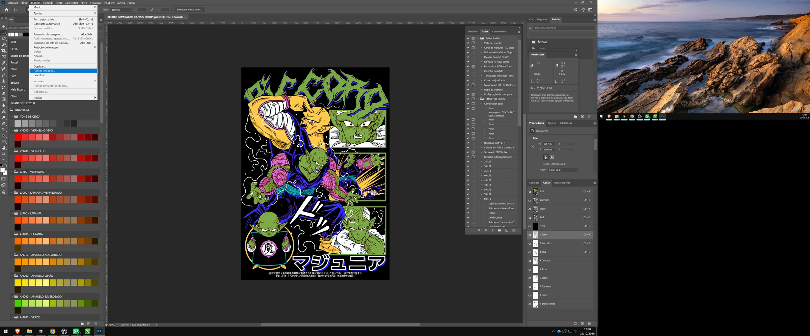
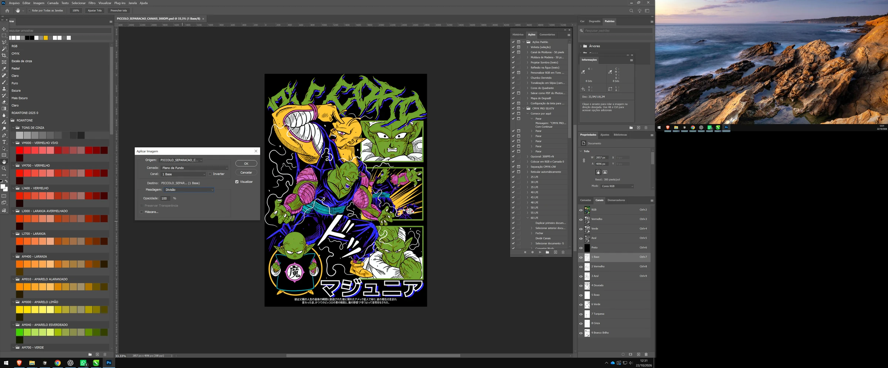

O motor adianta.
Você refina.
Abra a arte, compare a imagem original com a gerada e salve o PSD com os canais separados. O resultado chega bastante adiantado para a etapa de revisão.
Separador de canais para simulado serigráfico.
Adiante a separação da sua estampa com um grupo padronizado de cores.
Leve os canais para o Photoshop e finalize com o seu olhar.
100% gratuito · Windows 64 bits · Revisão manual necessária
O ADNY Separador nasceu para agilizar a separação de canais de simulado serigráfico. O motor trabalha com um grupo padronizado de cores para oferecer um ponto de partida aplicável a diferentes artes.
Abra a arte, compare a imagem original com a gerada e salve o PSD com os canais separados. O resultado chega bastante adiantado para a etapa de revisão.
O aplicativo precisa de melhorias. A separação automática não substitui a análise da arte nem a preparação para impressão. Revise cada resultado no Photoshop.
O QUE REVISAR ANTES DE IMPRIMIR ↗A arara-canga ganha outra leitura quando cada cor aparece separada. Explore os canais reais do PSD gerado pelo ADNY Separador e veja como eles participam da composição.
As miniaturas abaixo vêm do PSD gerado pelo aplicativo. Alterne as cores e observe a contribuição de cada separação.
Com todos os canais ligados, você vê a prévia salva no PSD. Ao alternar as cores, a mistura é ilustrativa e usa as máscaras reais do arquivo. A visualização digital não substitui a revisão no Photoshop nem uma prova de impressão.
Extraia o pacote completo da versão escolhida e abra o executável. No menu Arquivo, use Abrir para carregar sua imagem.
Aguarde a separação, compare a imagem original com a gerada e confira os canais. Use Salvar para exportar o resultado em PSD.
Abra o PSD no Photoshop. Ajuste os canais, prepare a retícula e adicione as marcas de registro antes da impressão dos filmes.
O app adianta a separação. O PSD gerado precisa ser aberto e revisado no Photoshop para adequar o resultado à arte e ao processo de impressão.
Confira os canais individualmente e em conjunto. Ajuste níveis, intensidade e saturação conforme a necessidade da arte. Não há um ajuste único para todos os arquivos.
Algumas artes não precisam de todas as separações. Avalie e exclua os canais desnecessários, verificando o efeito sobre o resultado combinado.
Quando necessário, enfraqueça esses canais usando Imagem → Aplicar imagem, com a mesclagem Divisão. Confira a prévia e ajuste para cada arte; não é uma etapa obrigatória em todos os trabalhos.
Faça a reticulação e adicione as marcas de registro no Photoshop antes de imprimir os filmes. Verifique a preparação de cada canal para o seu processo serigráfico.
Selecione o canal que deseja revisar. No Photoshop, abra Imagem → Aplicar imagem, confira a origem e o canal e escolha Mesclagem: Divisão. Use a visualização para avaliar a redução de intensidade, especialmente na Base e no Branco Brilho. Os prints mostram a Base como exemplo; não representam uma configuração universal.


Um resultado adiantado. Uma revisão indispensável.
O ADNY Separador está em desenvolvimento e precisa de melhorias. Confira o PSD e finalize a preparação antes da impressão.
Escolha uma interface direta ou explore as ferramentas adicionais. Ambas precisam da revisão final do PSD no Photoshop.
A versão do motor principal de separação, com uma interface enxuta e as opções de salvar e exportar o resultado.
Extraia a pasta e execute ADNY Separador Clean.exe. Mantenha a pasta _internal junto ao executável.
Inclui o motor de separação e menus e ferramentas adicionais para explorar o projeto.
Algumas ferramentas podem apresentar mau funcionamento ou não funcionar. A presença de uma opção na interface não garante que ela esteja concluída.
Extraia a pasta e execute ADNY Separador.exe. Mantenha a pasta _internal junto ao executável.
Aplicativos gratuitos e em desenvolvimento. Os pacotes incluem as bibliotecas necessárias para executar no Windows de 64 bits; não é necessário instalar Python para usar as versões de download.
O site apresenta o projeto. Para separar suas próprias artes, baixe e execute o aplicativo para Windows. A demonstração desta página usa canais extraídos de um PSD real. Ela não separa novos arquivos no navegador.
O resultado sai bastante adiantado, mas exige revisão manual no Photoshop. Ajuste os canais conforme a arte, faça a reticulação e adicione as marcas de registro antes de imprimir.
Não necessariamente. O motor usa um grupo padronizado de cores. Algumas artes permitem excluir canais sem necessidade; avalie o resultado antes de decidir.
O ADNY Separador trabalha com separação de canais para simulado serigráfico. O ADNY DTF Halftone é outro projeto, voltado à preparação de retícula para DTF têxtil. São propostas e fluxos diferentes.
CONHECER O PROJETO DTF ↗Sim, 100% gratuitas. A Clean reúne o fluxo principal de separação e exportação. A Completa inclui ferramentas adicionais que ainda podem falhar ou não funcionar.